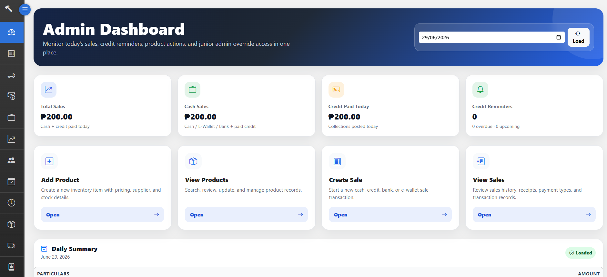

Inventory / POS / Supplier Credit System
A local business management system built with Flask, SQLAlchemy, SQLite, and Bootstrap. Includes product management, sales, credit sales, supplier purchases, cash dashboard, audit logs, stock reports, and role-based access.